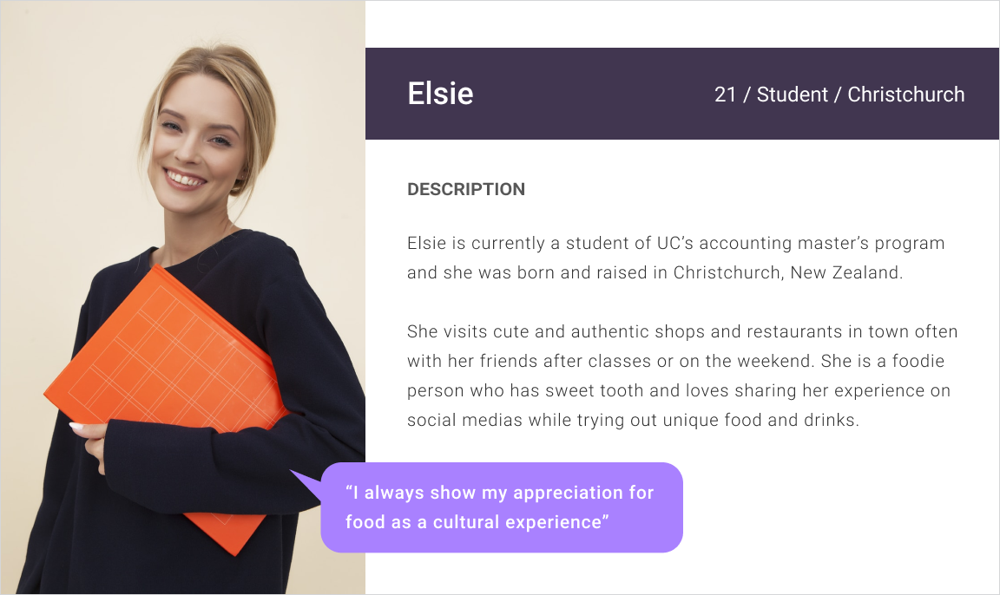
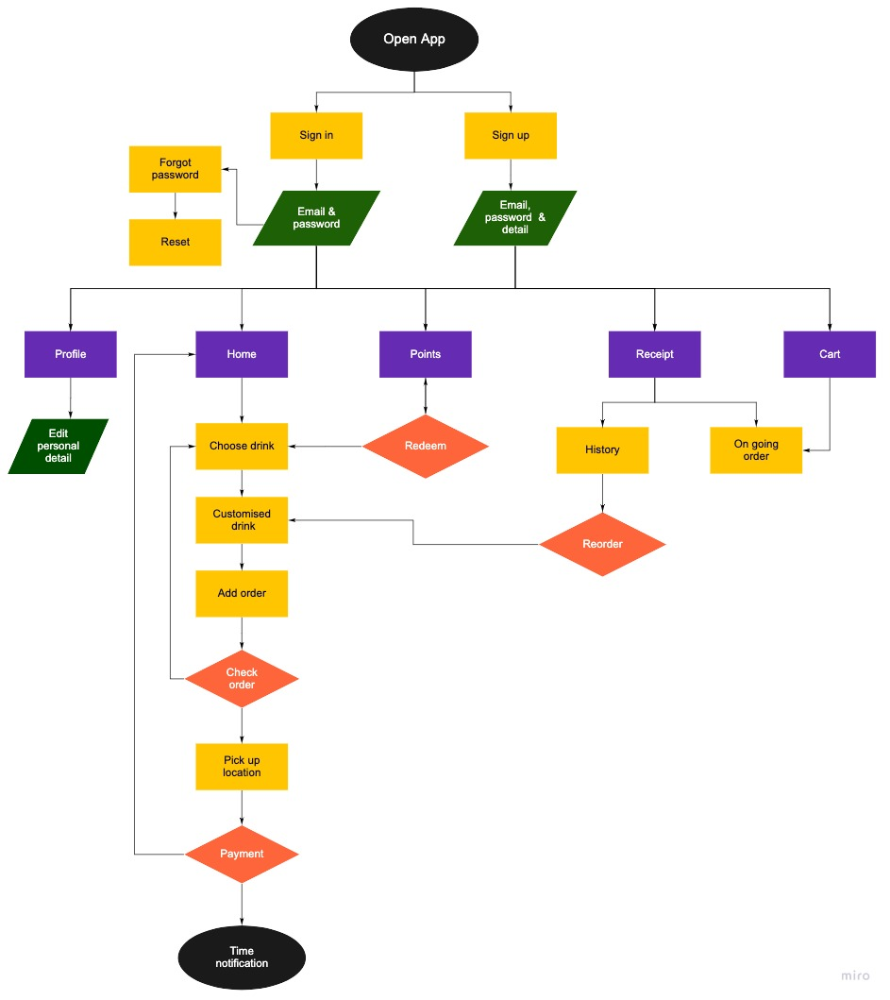
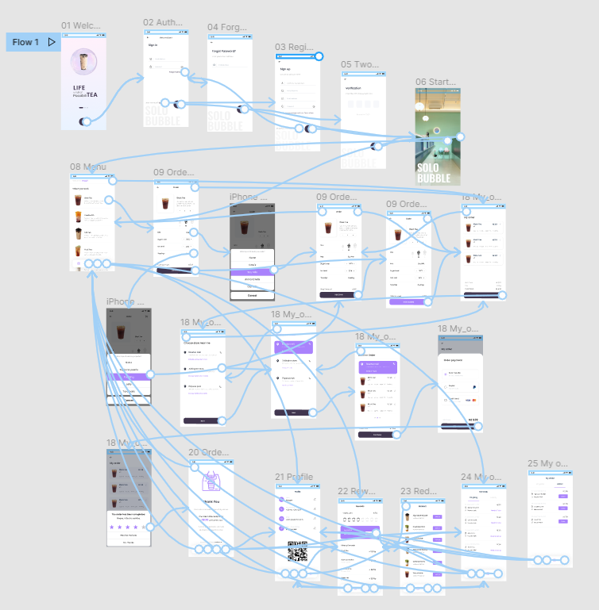
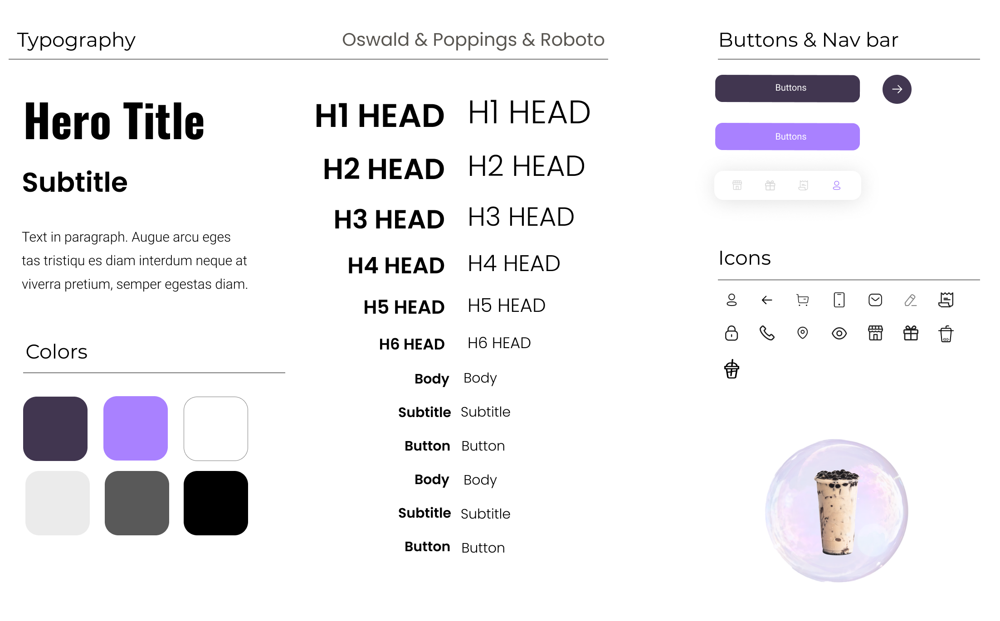

Solo Bubble
Design Goal
Solo Bubble is a New Zealand born, quick-service beverage company, started in 2020 by a Taiwanese girl that serves uniquely flavored tea paired with toppings that originated in Taiwan.
Solo Bubble does not have an app like some established beverage stores do, and can gain a huge competitive advantage over other bubble tea businesses with an app. As someone who loves ordering drinks from this shop, I was able to combine my love of bubble tea with my love for design to create a potential mobile app for Solo Bubble.
- Client: Solo Bubble
- Type: Mobile App
- Date: 04.04.2021
- Role: UI/UX Designer,User Research, Wireframing, Prototyping, testing
- Tag: New Zealand, tea, boba, bubble tea, beverage
Research
General Trends:
- Asian Kiwis helped spread the popularity of bubble tea, however, they are no more significant than any other demographic now
- Mobile ordering and payment processes are beginning to make a presence
- Bubble tea brands are best known for their programs on consumer loyalty--this makes consumers feel a sense of belonging
- Flavor becomes the highest influence criteria when people want to choose a bubble tea shop
- 1 of 5 consumers from China, Japan, Korean and India are influenced to purchase food and beverages by social media
Demographic:
- Appropriate for all ages but primarily targeted towards younger consumers: 20s - 30s
- According to the Tea Association 87% of millennials drink tea
- Asian-Kiwi people primarily as they have more likely have had exposure to boba products before
- Gen Z are 6x more likely to consume bubble tea than any other generation making it their signature drink
- Millennials and Gen Z are driving the demand for bubble milk teas and other non-classic categories
Lifestyle:
- Convenience of ordering, consuming the product and leaving
- Consumer shift towards healthy alternatives that substitutes sugar is expected to boost the growth of the bubble tea market
- Growth in health consciousness and increase in adoption of healthy beverages such as green tea, black tea, oolong tea, and white tea among consumers drive the market growth
- Natural sweeteners are increasingly added to bubble tea drinks to substitute sugar, a major shift in the variation of bubble tea drinks in itself
- Adjusting the sweetness level of bubble tea and using healthier and fresher ways of making the drinks have been popular
Overall Experience:
- Bubble tea concepts that do well in New Zealand are name brands coming from Asia, or which have an experiential factor where you can sit down and takeaway
- A big deal of bubble tea's popularity comes form the growing popularity of café culture in Asia
- 82% of customers conduct research online--they look through the menu, prices, and offers online before stepping foot inside the shop
- Promotion through social media channels such as Facebook or Instagram
Problem & Challenge
As someone who frequent drinks bubble tea weekly, I am very familiar with the long lines that run out the door, and how long it takes to get a drink. However, I was curious to find out what other customers thought about the wait in bubble tea shops:
- “After a 45 minute waiting, I was expecting my mind to be blown.”
- “Yeah I like the design of the shop and it's pretty hip. But I think it's not worth more than 20 mins of wait kind of good.“
- “You would think it would be quick since it's only tea they are serving, but it took at least 30 minutes of a wait.”
Solo Bubble has become so popular that customers are frustrated with waiting up to 45 minutes to receive their drinks. We are developing a mobile app for customers to order drinks quickly so that they don’t have to wait in long lines and staff can feel less pressure and work more efficiently in the same time. Also Solo Bubble benefits from this app because they are able to process more orders and in turn generate more revenue through the app.
Persona
Based on information I gathered my research, I created a persona named Elsie, who represents the key audience of Solo Bubble. She is a heavy social media user and is passionate to try different foods. She likes to share food and beverage experiences on Instagram and also to write reviews on Google map.

User Flow
Based on my experience with takeaway app, I made a goal to make the checkout process much more easier and seamless with Solo Bubble. According to the research, I created Solo Bubble user flow to organize the features in different sections of the mobile app, which was also used as the information architecture for the app.

Prototype
Feel free to check and play with the prototype, and let me know if you have any feedback!

Design System
I wanted to go with something that would give out clean lab vibes while facing the majority of young customers. I chose two different kind of purple colors as I felt that would be best suited for users between 20-35 who love to try new beverages and their personailty is more funky and street style.
I also gave two functions for these two colors - Dark purple is for confirming your choice, and vivid purple is for decision has been made and highlight.
In this case, users can easily know the steps and process they have gone through and also find important information by colors. A clean layout and simple process is always the best choice when designing a mobile app. I also counted users only click 6 times buttons from opening app to finish order to get time notification to pick up. This way is not only save time for users also benefits to Solo Bubble to get more orders.
